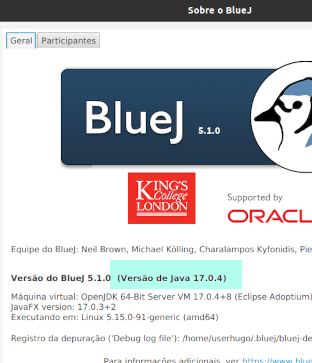
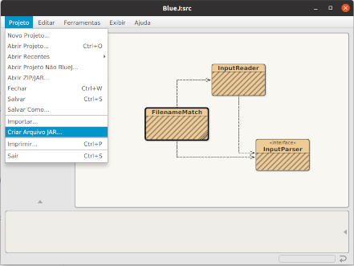

Manual do FilenameMatch
Finalidade
Localizar arquivos que possuam ocorrências coincidentes de substrings nos nomes destes arquivos.
Uso
Parâmetros
É possível selecionar os parâmetros:
- Diretório de pesquisa
- Se a pesquisa se estende ou não aos subdiretórios
- Uma sequência de quantos tokens (palavras) representa ocorrência coincidente
- O número mínimo de caracteres para ser considerado token
- O arquivo de saída (ou terminal)
- Expressão regular para filtrar os arquivos pelos nomes (não se aplica às extensões)
- Os tipos de arquivos (extensões) que podem ser pesquisados
1 - Só aceita diretórios existentes e onde o usuário tenha direito de leitura. Deixando este campo em branco, a pesquisa terá como raiz o diretório corrente.
2 - A pesquisa pode se estender a todos os subdiretórios, recursivamente. A opção default só varre os arquivos do diretório selecionado no campo anterior.
3 - Define quantas palavras (tokens) deve ter uma substring que ocorra em dois ou mais arquivos, para que estes arquivos sejam indicados como tendo coincidências em seus nomes. O default para este campo é 3, e o mínimo 1. Se for selecionado valor 1, apenas arquivos com o mesmo nome (mesma sequência de tokens) serão listados como coincidentes. Obs: extensões não são avaliadas como sendo parte do nome do arquivo.
4 - Define quantos caracteres deve ter um token. Palavras com número menor de caracteres não serão comparadas. O default para este campo são 2 caracteres e o mínimo 1.
5 - A saída padrão é direcionada ao arquivo lista.txt, gravado no diretório corrente. Se este arquivo já existir, será sobrescrito. Digitar "//console" neste campo direciona a saída para o terminal.
6 - Uma expressão regular pode ser indicada para selecionar os padrões de nomes de arquivos que podem ser comparados. Essa regex não será aplicada às extensões dos arquivos e nem aos seus caminhos, restringindo-se apenas a filtrar a parte que corresponde ao nome do arquivo. Por default, qualquer nome de arquivo é elegível para ser pesquisado.
Sintaxes de regex podem variar ligeiramente dependendo da linguagem de programação usada. O programa utiliza a sintaxe regex da linguagem de programação Java.
7 - Seleciona que tipos de arquivos (extensões) podem ser pesquisados. Por default todos os tipos de arquivo são pesquisados.
O programa tanto pode fazer uma pesquisa exaustiva (encontrando toda e qualquer substring em comum em nomes de arquivos), como pode fazer esta pesquisa em curto circuito, onde apenas a primeira ocorrência coincidente é catalogada.
Modo exaustivo (flag -full)
Se for, por exemplo, selecionado que sequências coincidentes devem ter no mínimo 3 palavras, então serão comparadas todas as possíveis sequências com 3 palavras entre dois nomes de arquivos.
Modo curto-circuito (default)
O loop que realiza todas as comparações possíveis é interrompido assim que uma primeira sequência coincidente é encontrada. (E estes 2 arquivos são listados como coincidentes nessa sequência de tokens)
Comparação entre busca exaustiva e curto-circuito
Algumas estatísticas:
Passei uma pasta com muitas subpastas:
21.581 Arquivos, 42 SubPastas
O tempo de processamento com -full foi de 3.925 seg., em torno de 1 hora e 5 minutos.
O tempo de processamento com -short foi de 3.767 seg., em torno de 1 hora e 2 minutos.
Na verdade, o exemplo acima não pode ser tomado como uma razão constante entre os dois modos de processamento. A diferença depende dos arquivos pesquisados e pode variar.
O que ocorre é que, para encontrar todas as coincidências possíveis entre nomes de arquivos, é necessário que cada arquivo seja comparado com todos os demais.
Portanto, para N arquivos, são realizadas (N2 - N) / 2 comparações entre nomes de arquivos.
Para o exemplo acima foram realizadas 215812 comparações entre arquivos porque rodou em uma versão anterior. Significa que mais de 465 milhões de comparações precisaram ser realizadas.
(Na atual versão seriam feitas 232.858.990 comparações)
Mas em todas estas comparações, o modo exaustivo só iria diferir do curto-circuito naquelas comparações em que houver pelo menos uma sequência coincidente. Porque quando não há coincidência, em ambos os modos o loop deve prosseguir até o final.
Então se, em um conjunto de 21.581 arquivos, mil configuraram como pares coincidentes, significa que em apenas 2 mil destas comparações (dentre mais de 465 milhões que foram feitas), o tempo de comparação foi mais rápido.
O que, de fato, daria mesmo diferença insignificante no tempo total de processamento.
No entanto essa diferença poderia ser maior se (também pra mil arquivos coincidentes catalogados), cada um, em média, apresentasse coincidências com outros 50. Nesse caso seriam cerca de 100 mil comparações feitas em menor tempo no curto-circuito. O que, ainda comparado a 465 milhões, continuaria sendo um ganho relativamente pequeno.
Apesar disso, busca em curto-circuito é modo default. O flag -full ativa a busca exaustiva.
Exmeplo: java -jar FilenameMatch.jar -full
Comparando conteúdo de arquivos
Pra cada dois arquivos que derem match, o programa pode comparar seus conteúdos para determinar se estes arquivos são idênticos internamente.
Essa comparação não é feita byte a byte, mas calculando um hash para o conteúdo de cada arquivo e comparando estes hashes (dois números de 256 bits).
Embora seja possível que dois arquivos diferentes produzam o mesmo valor de hash, no algoritmo SHA-256 a probabilidade disso ocorrer é ínfima. Mas este valor de hash pode ser armazenado em um buffer para que, quando este mesmo arquivo tiver seu conteúdo comparado a outro, seu conteúdo não precise ser lido novamente: o programa apenas irá buscar seu hash sha no buffer.
Comparações de conteúdo não são realizadas por default. O flag -sha ativa as comparações de conteúdo.
Exmeplo: java -jar FilenameMatch.jar -sha
Selecionando o encoding do terminal
O programa não configura a página de código de um terminal Windows e nem o encoding de um terminal Linux/MacOS/etc...
Mas é possível selecionar o encoding com o qual ele irá codificar os caracteres que envia para o terminal e com o qual irá decodificar os caracteres que lê do terminal.
Este charset, claro, deve ser o mesmo charset do terminal. Se possível.
Chamando o programa com o flag -cs=TIPO_DO_ENCODING o usuário determina o charset que será usado. (Apenas na comunicação com o terminal, para arquivos a gravação será sempre no padrão UTF-8)
As opções disponíveis são:
- iso-8859-1 (compatível com CP ANSI 1252)
- us-ascii
- utf16
- utf_16be
- utf_16le
- utf8
Exemplo: java -jar FilenameMatch.jar -cs=us-ascii
UTF-8 é o encoding default do programa, mas isso pode ser atterado editando-se a linha 85 do fonte FilenameMatch.java.
private static String consoleCharset = "utf8";
Todos os flags podem ser usados em conjunto ou em separado. E em qualquer ordem.
Exemplos:
java -jar FilenameMatch.jar -sha
java -jar FilenameMatch.jar -full -sha
java -jar FilenameMatch.jar -cs=utf16 -sha -full
Compilação
Pode ser compilado com FilenameMatch.java, o que irá gerar todos os .class necessários.
Pode ser compilado também pela IDE BlueJ.
Para isto basta abrir a pasta src com os fontes, com a opção Abrir Projeto não BlueJ, selecionar com o mouse a classe principal FilenameMatch e clicar em Compilar.
Porém, pode ser útil saber que esta IDE se instala com seu próprio JDK, que pode até ser mais recente que o instalado no sistema.
Neste caso, o projeto compilado pelo BlueJ não executaria na JVM do sistema.
Para saber a versão do JDK do BlueJ, acesse a opção Sobre o BlueJ da IDE.
Para saber a versão do java instalada no sistema, use o comando java -version
Gerando um arquivo JAR
A forma mais prática de fazer é pela IDE BlueJ, depois dos fontes terem sido compilados pelo próprio Bluej ou com javac FilenameMatch.java
Basta escolher qualquer nome para o arquivo, indicar que FilenameMatch é a classe principal, e depois executar com java -jar qualquerNome.jar